----Personal Essays----
This page contains a series of personal essays, with the newest being first and the oldest being last. It would be best to read these in chronological order. These personal essays are similar to some sort of blog post, and I will continue to update them as time permits. Also, note that I am aware my writing is bad and constructive criticism is welcome. Send me an email.
Airshow in Wesel
Jasper Holton | August 22, 2015
Surviving my first week of school turned out to not be as difficult as I thought. I was lost in many of my classes, but in some I am actually beginning to understand the material as my knowledge of German improves. I have been making new friends in and out of school, and having a really good time here in Wesel. This weekend there is a yearly airshow, where many small planes are shown off at the small, grassy runway strip near the Rhine. Among the planes were many skidivers, and I enjoyed watching them tumble through the air before gracefully gliding down to the ground.
 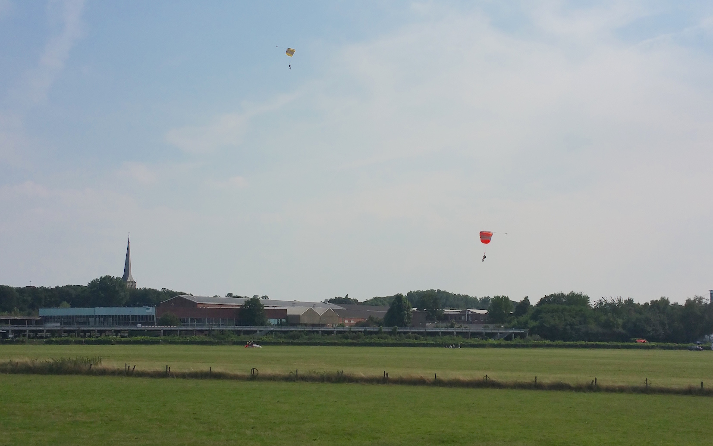
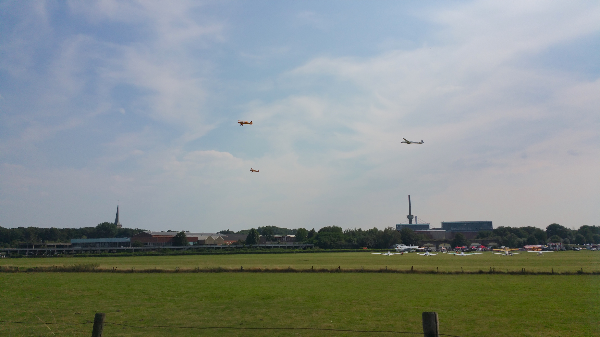
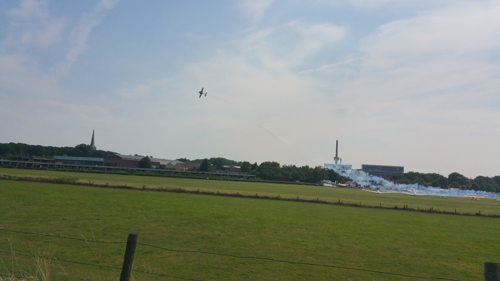
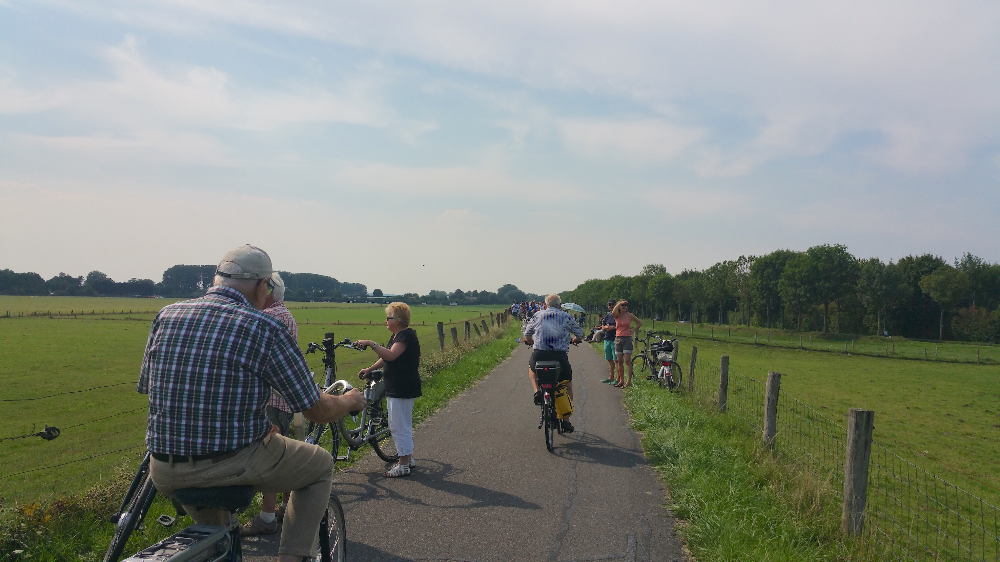
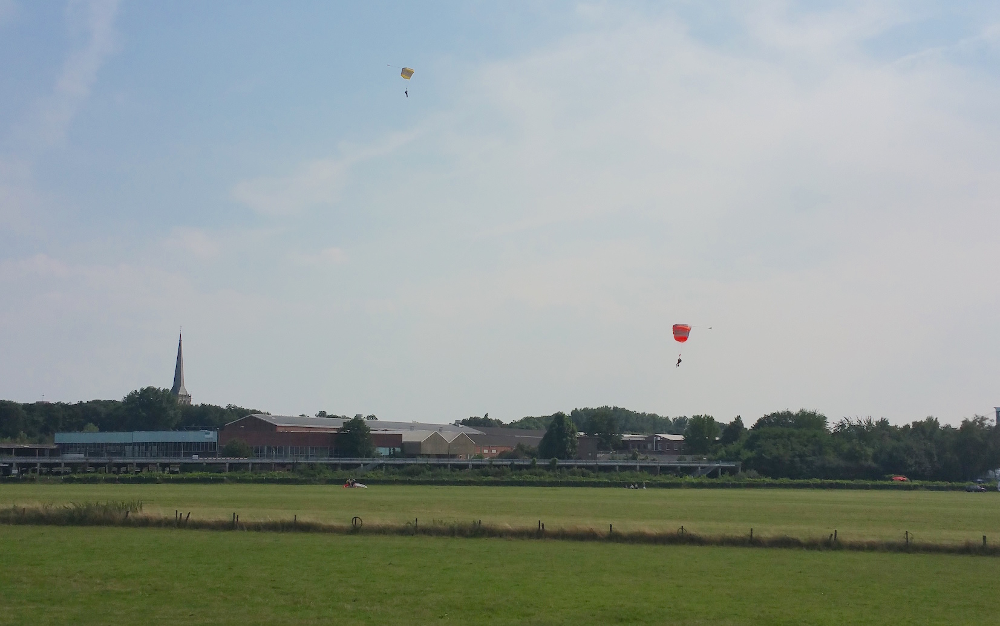
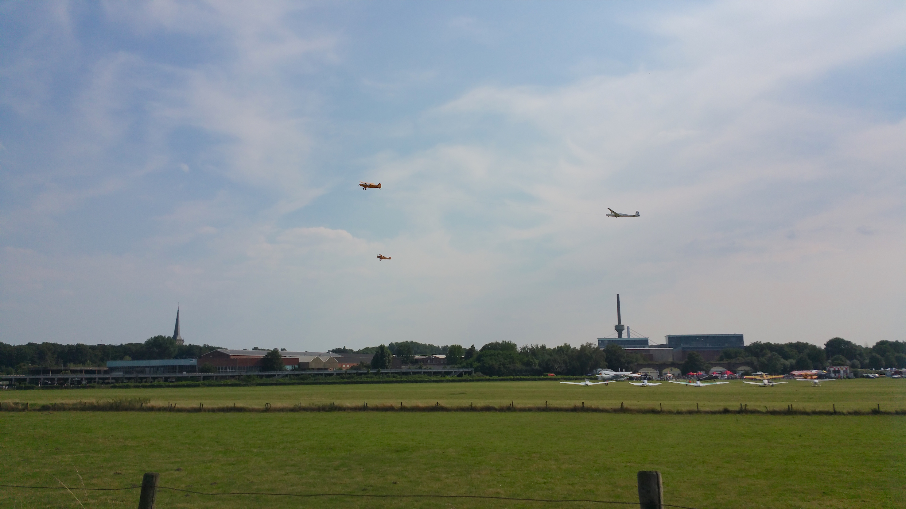
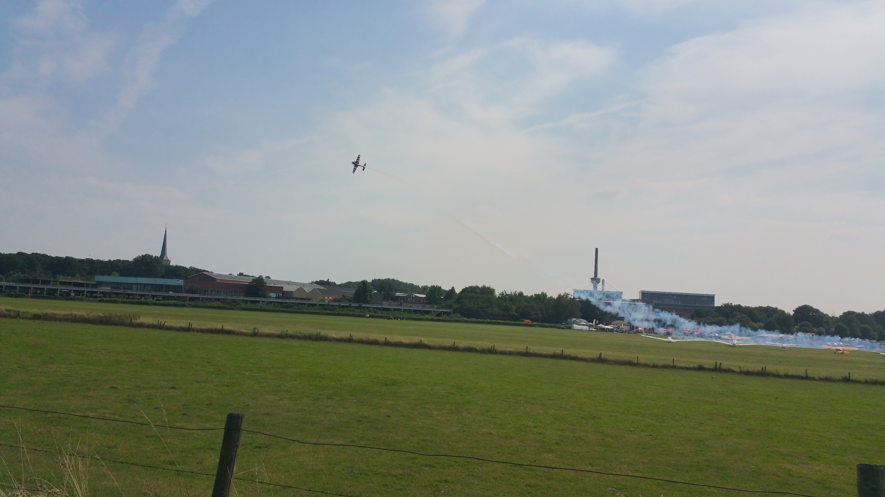
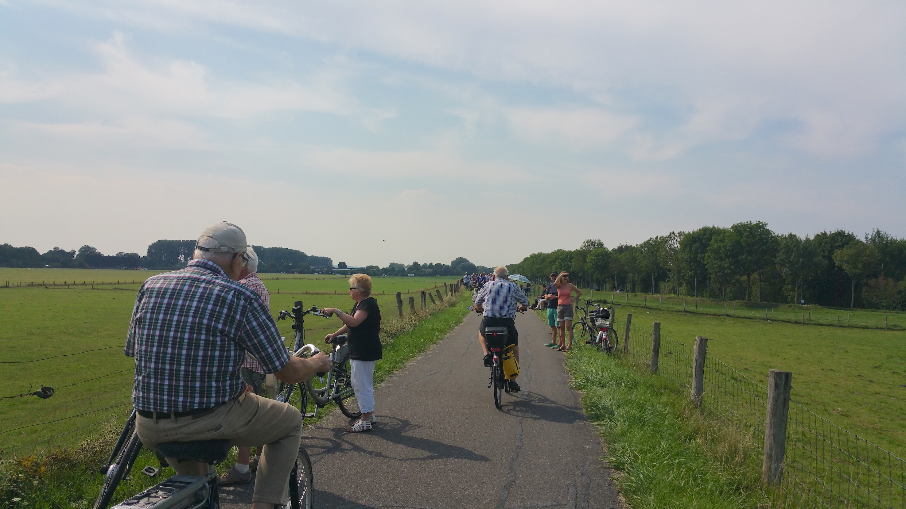
(Above) People gathered from in and outside of Wesel to watch this airshow.
There's been a lot going on, and not much time to write, so I'm going to leave it at that.
School, Wesel, and Otto Pankok
Jasper Holton | August 19, 2015
I wasn't really sure what to expect of German school. It certainly wasn't the same as my school in Alaska, but it wasn't all that different either. The schedule was less consistent, with alternating classes and free periods scattered over the course of a week. Some days I don't start school until late morning, and some days I finish early in the afternoon. I found the layout of the school to be confusing, as the school had many new sections built onto the original building. However, with the help of some newly made friends, I was able to make it to all of my classes. The classes were a bit confusing, because my German knowledge is certainly lacking. Despite this, I was able to mostly follow what was going on just because of my previous experience with the subjects and the bits and pieces of language that I am beginning to understand.
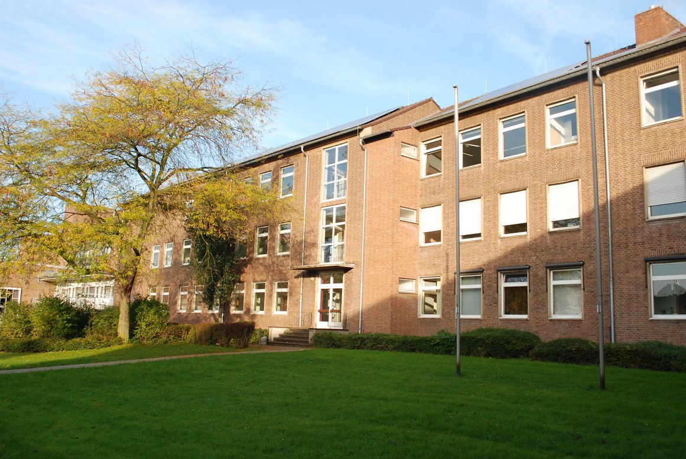(Above) A view of my Gymnasium (high school) from the front
I also decided to participate in the school Orchestra, which meets on Tuesday afternoons. The school lent me a violin, and I enjoyed playing after a few month's hiatus from practicing. I will most likely participate in another Orchestra as well, and I will soon be lent a violin to use for the year.
Meanwhile I have gotten the chance to explore Wesel a bit more, and I still really enjoy being here. For the past few days it has been a bit rainy, but today it the weather has cleared up and I am typing this under the pleasant warmth of the sun. I still really enjoy that I can ride a bicycle everywhere, and downtown Wesel (pictured below) is just five minutes away.

(Above) Downtown Wesel
Today I had the opportunity to visit a museum in the countryside just outside of Wesel. Here I met my Rotary Youth Exchange Counselor, as well as several other Rotarians. This museum is called the Otto Pankok Museum, and features many beautiful works of art by Otto Pankok and his daughter. It is located in the house that once belonged to Otto Pankok himself. Otto Pankok was a German painter who spent his life creating fantastic art before his death in 1966. The museum is a work in progress, with many pieces of art not yet displayed, but it was still great to see these creations. Below are a few pictures I took in the museum.
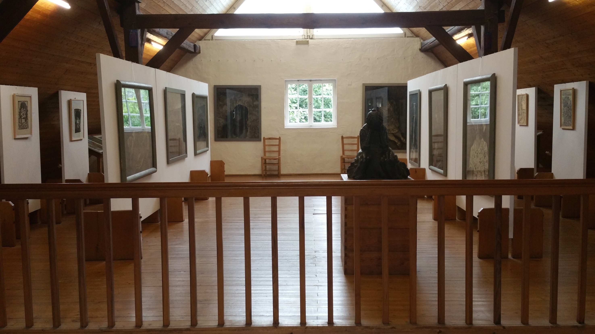(Above) A view of the museum
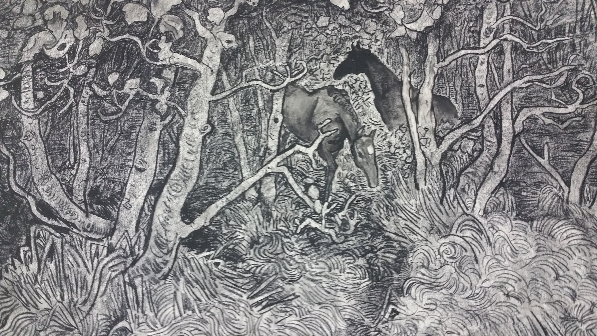(Above) A painting of horses by Otto Pankok
(Above) Two more paintings by Otto Pankok
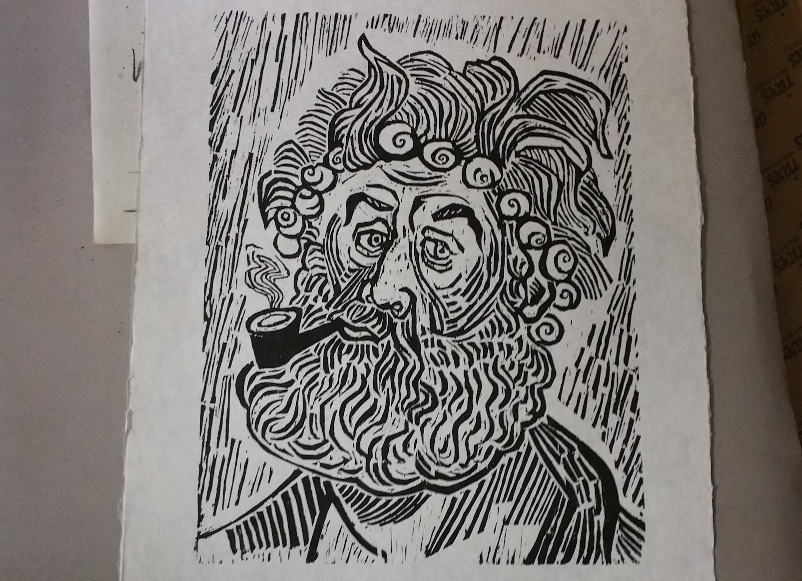(Above) A self portrait done using a wood block print by Otto Pankok
I've been continuing to have a great time here in Wesel. My German skills are coming along, and this weekend I will go to a Rotary event and meet the other Rotary exchange students who have come to this area of Germany. My host sister, Franka, will leave for America next Monday. I am excited for her, and hope she enjoys her exchange as much as I have so far.
A Day in Münster
Jasper Holton | August 15, 2015
So far I have been having a wonderful time here in Wesel. I like my home, my family, my school, my friends, everything. Today, I had the opportunity to catch a glimpse of something outside of what I had already seen: The town of Münster (pronounced like Moonster). I drove with my host family to Münster, where we visited the market, shops, and churches. The market was very crowded and busy, and I quickly saw why. There were people everywhere selling all sorts of goods. Fruits, vegetables, flowers, food, cloth, and many other items.
(Above) A table with pesto for sampling, and a stand selling cheese.
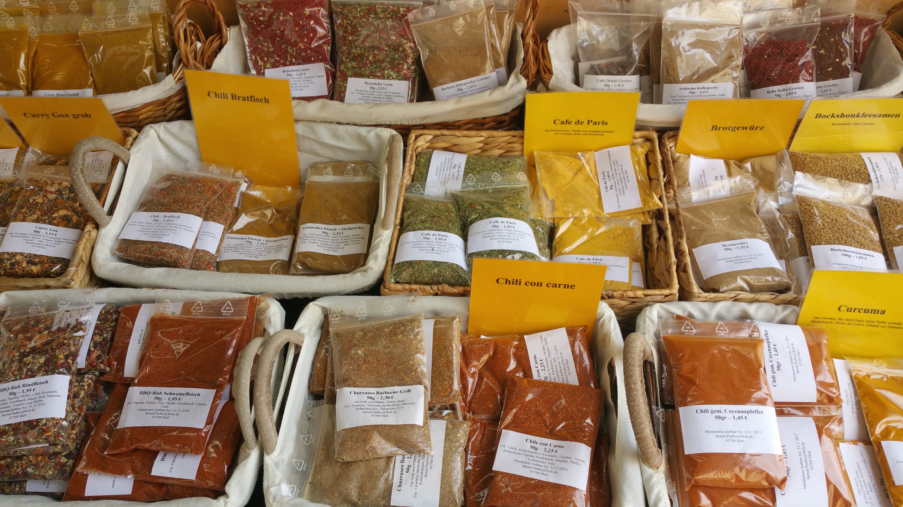(Above) A stand selling spices
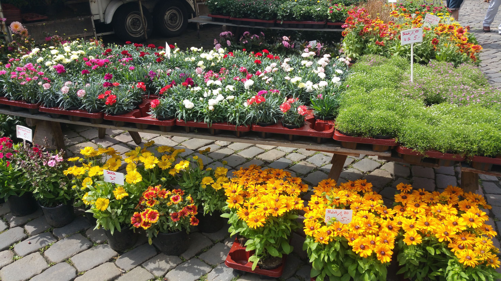(Above) Flowers for sale

(Above) Vegetables for sale
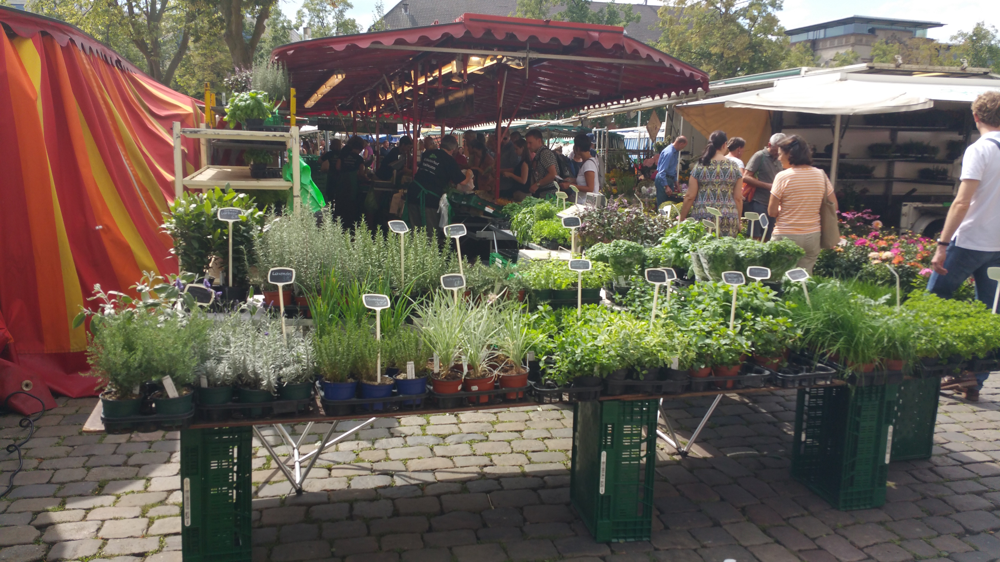(Above) A stand selling plants
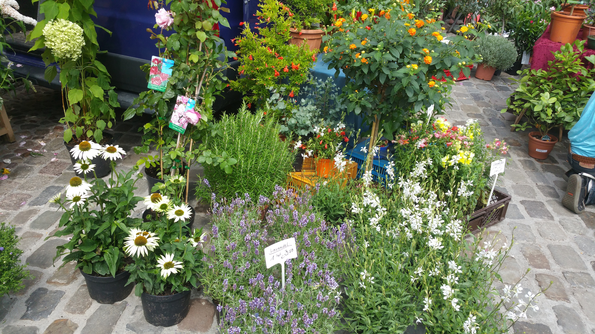(Above) More plants for sale
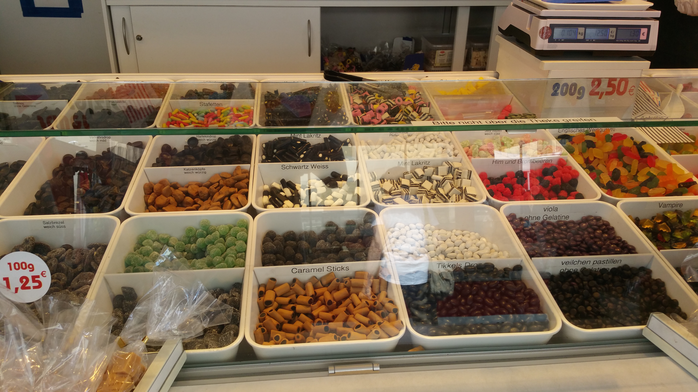(Above) A stand that is selling sweets. We bought some of these, and they were wonderful. Certainly better than the sweets we have in America.
The market was very exciting for me, because I rarley got to have any sort of experience like this in Alaska. There were all sorts of people everywhere, and a lot of them weren't even from Germany. Apparently many people come over from the Netherlands to shop at this market. Being as everything is close together here, it doesn't take long to get from one place to the next. This means that people are willing to travel out of their town to attend these sorts of markets, making the markets even bigger.
Another exciting experience for me was visiting the various churches in Münster. These churches have been there for hundereds of years, but were sadly completley destroyed by Allied Forces bombings during World War Two. However, they were rebuilt very well and look just like the originals
(Above) Outside and inside the Lamberti Nachrichten church in Münster. Though this church was rebuilt, the stained glass windows are the originals.
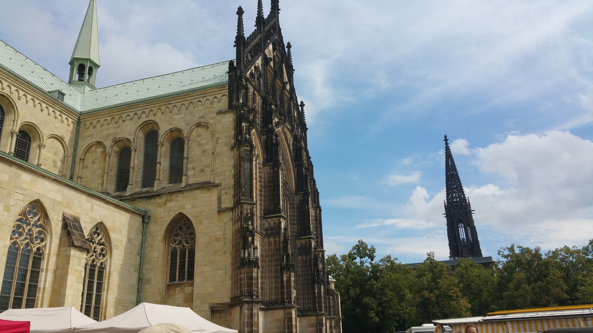(Above) An outside view of another church
My favourite part about these churches was the beautiful pipe organs that were inside. I think the organ is a wonderful instrument, and I love seeing them and hearing them played.
(Above) Massive pipe organs from two of the churches in Münster.
(Above) Candles in these churches.
All in all, my experience in Münster was great. I will probably go back again later in the year, but meanwhile I will have plenty of time to experience my host town of Wesel and other parts of Germany. So far I am pretty well settled in, I have mostly recovered from jet lag and I have gotten set up with a bank account and a German cell phone plan. Next Monday will be my first full day of school, and I look forward to the experience of it. I had expected to start my language school in Dusseldorf next monday as well, but it turns out this will not start until the 31st of August. Meanwhile I will continue building my German knowledge by practicing with my host family and friends, as well as using Duolingo, Mango Languages, and the German books that I have.
I have been fairly busy with everything that is going on, and I have been trying my best to limit my time on the computer. As such, I have not been updating these essays as often as I was before. However, I will try to write a new one on Monday or perhaps Tuesday next week. Thanks for reading~
Adjusting to my New Home
Jasper Holton | August 12, 2015
I've always been a pretty flexible person, so adjusting isn't difficult for me. Nonetheless, there are a few things I had to get used to. Though I have built a good foundation in german language using Duolingo and several other language learning programs, I still find myself lost in every conversation that is not in english. I can pick up a few words here and there, but my knowledge of German language is not yet good enough to fully understand the context. Nonetheless, I quickly adjusted to not understanding what is going on and adapted a perpetually confused look during German conversation.
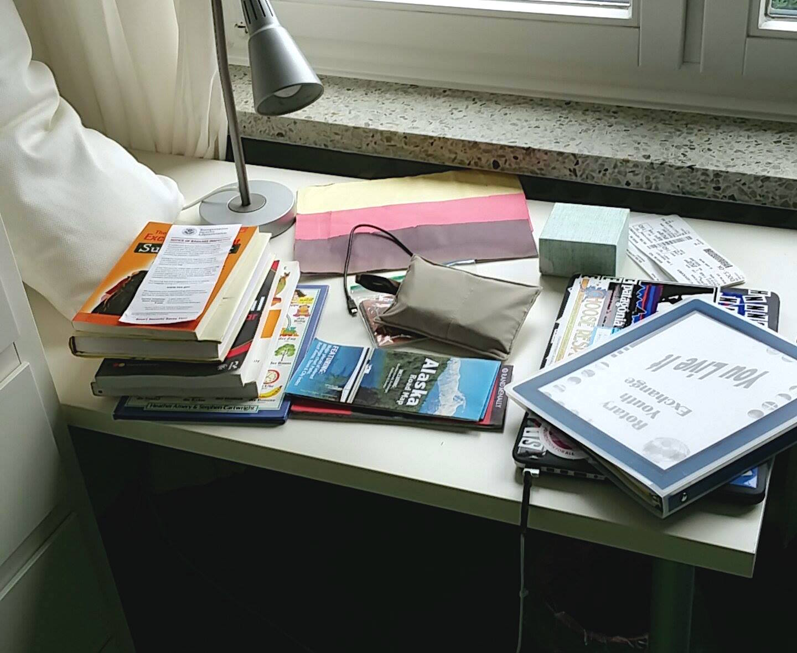Despite this, I am adjusting well. My new home in Wesel is quite elegant and organized, and I have a room to myself. My host family is great, and I like all of them. Today I woke up at 6:30, as school started at 8:00. I found that my host family drinks tea in the mornings, which is great because I enjoy tea as well. The school which I attend is called Andreas Vesalius Gymnasium. It is only five minutes away by bicycle, and the ride there is quite beautiful.
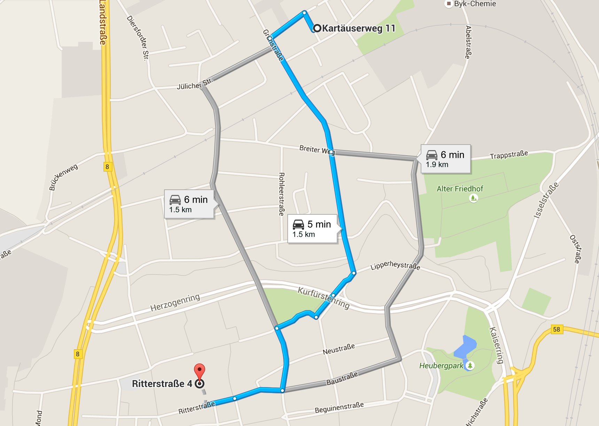I went to the school with my host mother, Martina, but as it turned out the person we needed to meet to organize my classes was in a meeting. We then went back home for about an hour, before returning to the school. At the school, I met with one of the administrators to organize my classes. I decided to take Information Sciences as well as Mathematics as my main classes, as well as several other classes. However, for the first two months I will only go to school in the morning, and will go to a language school in Dusseldorf in the afternoon. Today I did not go to any classes, and instead went home to get some more rest. Tomorrow I will go to one class, and then meet again with the administrator to get my schedule. I will start my language course in Dusseldorf next Monday.
Meanwhile, I have a goal in mind for my exchange. This goal involes a bit of philosophy from my personal hero, Randall Munroe.
"Take wrong turns. Talk to strangers. Open unmarked doors. And if you see a group of people in a field, go find out what they're doing. Do things without always knowing how they'll turn out. You're curious and smart and bored, and all you see is the choice between working hard and slacking off. There are so many adventures that you miss because you're waiting to think of a plan. To find them, look for tiny interesting choices. And remember that you are always making up the future as you go." - Randall Munroe, XKCD #267
This is what I intend to do during my exchange. I want to seek out adventures and try new things. And most importantly, I want to learn as much as I can. Though I recognize the value of hard work, and the neccesity of slacking off, I know that adventure is out there. And it doesn't always require a plan.
Travel to Germany
Jasper Holton | August 11, 2015
Around 1:00 AM yesterday moring, I said goodbye to my friends and family for a year. It was sad to think that I won't be seeing these wonderful people for a while, but I was also excited to be on my way.


My flight to Seattle was fairly fast and easy, and I even managed to get some sleep. I groggily left the plane and headed down to the Alaska Airlines board room, where I waited for my next flight. Due to delays, my layover ended up being nearly twelve hours. The flight went pretty well; I managed to sleep a bit and also sharpen up on my German.
 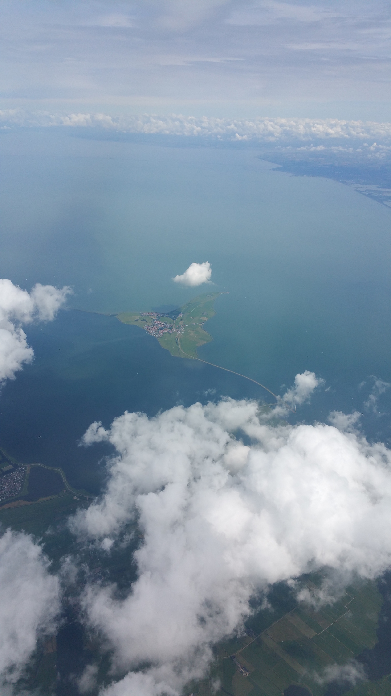
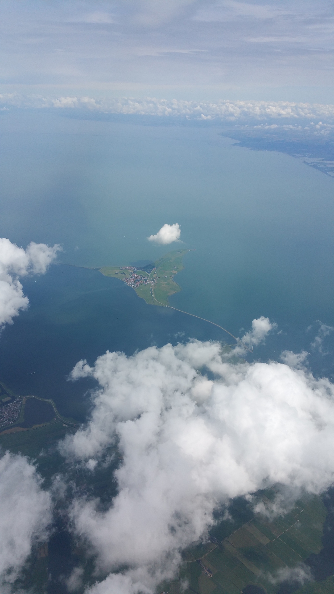
I found myself walking off the plane to a beautiful and sunny day in Amsterdam, and by the time I had walked across the airport my next flight was already boarding. The KLM City Hopper plane took me to Dusseldorf, where my wonderful host family was waiting. I met Martina, Cornelius, Laurenz, and Franka, as well as their exchange student from France, Maria. They brought me to their wonderful home in Wesel, and welcomed me with open arms. I would write more but school starts tomorrow and I want to get some sleep.
Anticipation
Jasper Holton | August 9, 2015
Well, today is the last day that I will spend in Fairbanks. This afternoon, I finished packing my bags. I also finished packing up and cleaning my room, and it's emptiness reminds me of a quote from Confucius: "The will to win, the desire to succeed, the urge to reach your full potential... these are the keys that will unlock the door to personal excellence."
(Above) My empty room
I have lived in Fairbanks for as long as I can remember, but I am still happy to leave. Before, I thought by this time that I would be sad and worried about leaving, and even have doubts about whether I should be going on exchange. However, I don't seem to be having me. I am still confident that this is a good decision. In fact, I am more confident than I have ever been. The anticipation is almost electric. It's like something is pulling me from every direction, and I can feel it pulsing through my veins. I realize how much this exchange really means to me because as the hours and minutes go by getting closer to midnight, my heart beats and my mind races even faster than before.
I may not be ready for everything. My German language skills are inadequate for normal conversation, my forgetfullness surley means I am leaving something behind, and I can't prepare for the new experiences that I will find in Germany. Even so, I know I am ready for the challenge, and beyond this, I know I am ready to give this everything I've got. As Winston Churchill once said, "Some people dream of success, while others wake up and work hard at it." While this exchange has been my dream for quite some time, the person I am is the latter.
Moving Out
Jasper Holton | August 5, 2015
For me, leaving the country for a year doesn't just mean packing up my bags and tidying up my room. When I come back to Alaska next summer, I won't have a house to come back to. My father took a new job in Hawaii, and we have a house there which my parents will be staying in. My sister moved out of the house several days ago, and now lives with a roommate in a cabin near the University. Where does this leave the house I live in now, which I have lived in for over a decade?
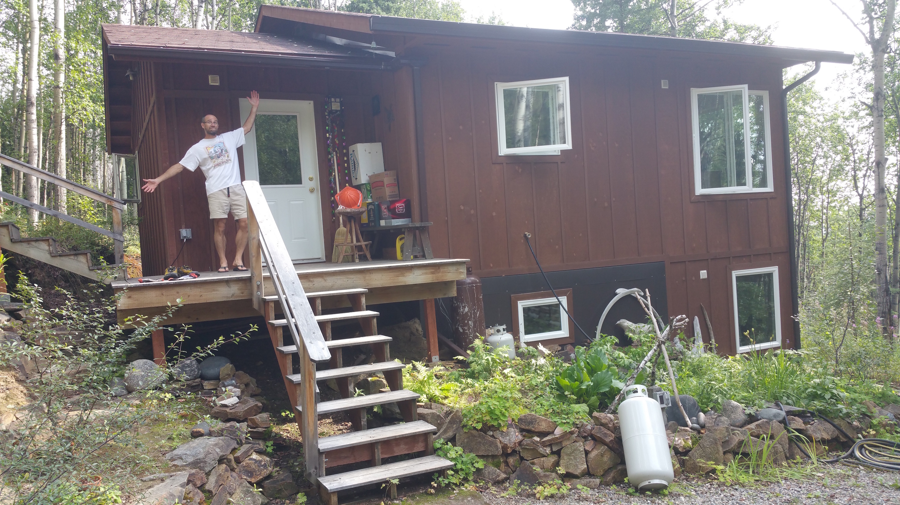This house is going to renters on the 13th of August, just a few days after I leave town. That means that as I pack up my bags to leave, I also have to pack all of my posessions into boxes to put into storage. I have also been getting rid of some of my posessions, and minimizing what I have so I can be ready to take it with me. It feels weird to look at all of my posessions and wonder if they really have value to me, and if they are really worth keeping.
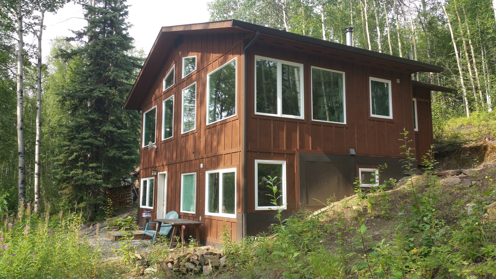Despite this, I'm not going to get too sentimental. This house is my childhood home, but I understand the importance of moving on. Otherwise, there's not too much left to do before I leave town. I've got to get a few things together and finish packing, but aside from that I am ready to go.
One Week Left
Jasper Holton | August 3, 2015
Looking back, a lot comes to mind when I think of why I decided to go on exchange. I have thought about being an exchange student since I was in middle school. I thought it would be fun to do it, just for the experience. I was fascinated by the stories told by other exchange students, and I also liked the idea that it was an opportunity to connect with another culture. I also liked the challenge of it, learning a new language and integrating into a new culture. And to me, it seemed like a year where I could have a good time and get a chance to reflect on my life and figure out where I am going. But as the days get closer to my departure, I know it will be so much more than that.
In the fall of 2014, I put in an application with Rotary Youth Exchange. I was very excited and nervous to hear back- going on exchange meant a lot to me, and I really wanted Rotary to accept me. I saw it as the best program that was available to me, and I liked the aspect of having a Rotary club manage the exchange. It turned out that the Rotaty people liked me, and I they accepted me into the program. The interview was a bit scary, but I did do well and I was able to answer all of their questions. After my acceptance, I went through a series of many meetings to prepare for the exchange. I enjoyed these meetings, and some of them even involved staying at hotels in Anchorage and hanging out with other exchange students. I met a lot of great people through these meetings, and had a lot of fun. Here are a couple of pictures.
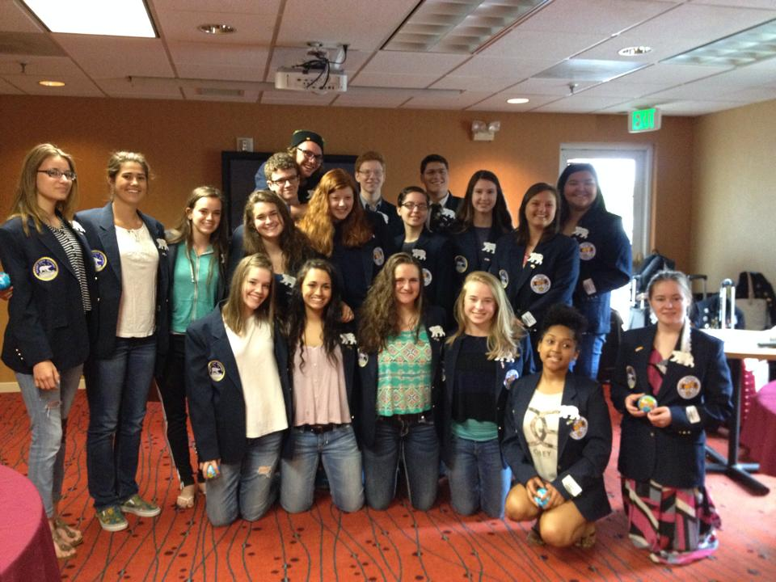Myself and other exchange students (above) Group picture with all Rotary Alaska exchange students (below)
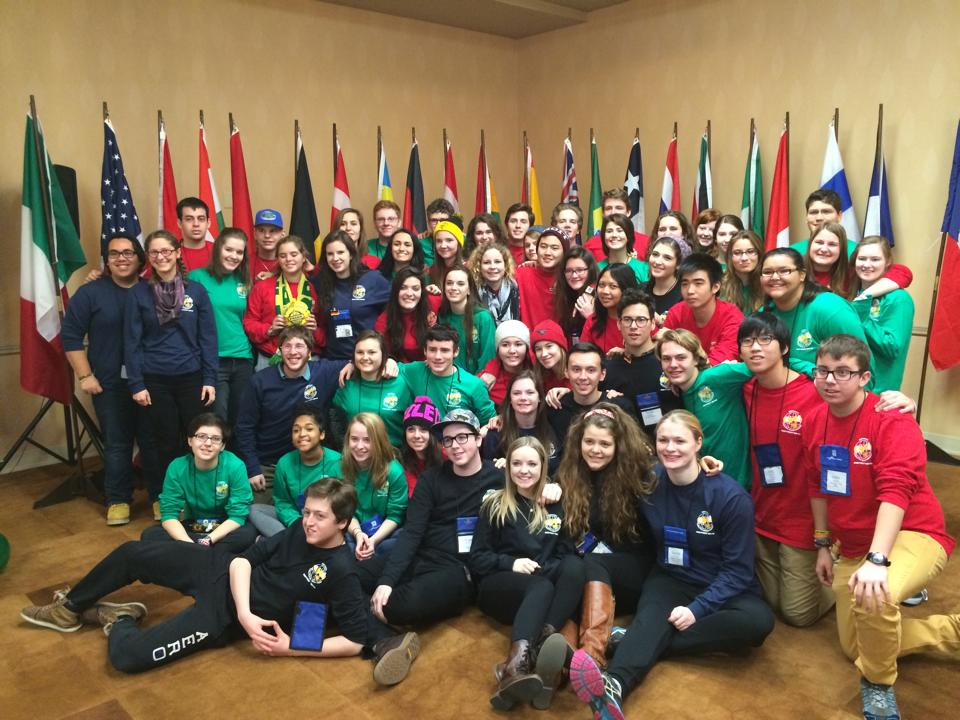During one of the meetings I addressed above, I was interviewed to be placed in one of the many countries Rotary sends students to. I was delighted to hear that I was to be sent to Germany. A few weeks later, I was contacted by my host family, who lived in a beautiful small town in northwestern Germany. This town is called Wesel. A week from now, that is where I will be staying. And I will stay there for a whole year.
Anyway, going on to address the title. Why does this blog say one week left? That is because it is one week before I leave. Today is Monday, August 3. I leave on the morning of the 10th, not less than one week away. I have some knowledge of the German language to back myself up with, but I am going to need a lot more to hold up there. Hopefully I will pick up the language fast when I am there, they always say that immersion is a quick way to learn. But I intend to work very hard on the language, and especially in the upcoming week improve my skills.

I'm going to miss my friends here in Fairbanks. And I'm going to miss my home. But I know this year will be worth it. I look forward to the challenge and I cannot wait for the experience. And the fact is, when 1:25 AM comes around on the 10th of August and I step on to that plane, I'm not going to look back.